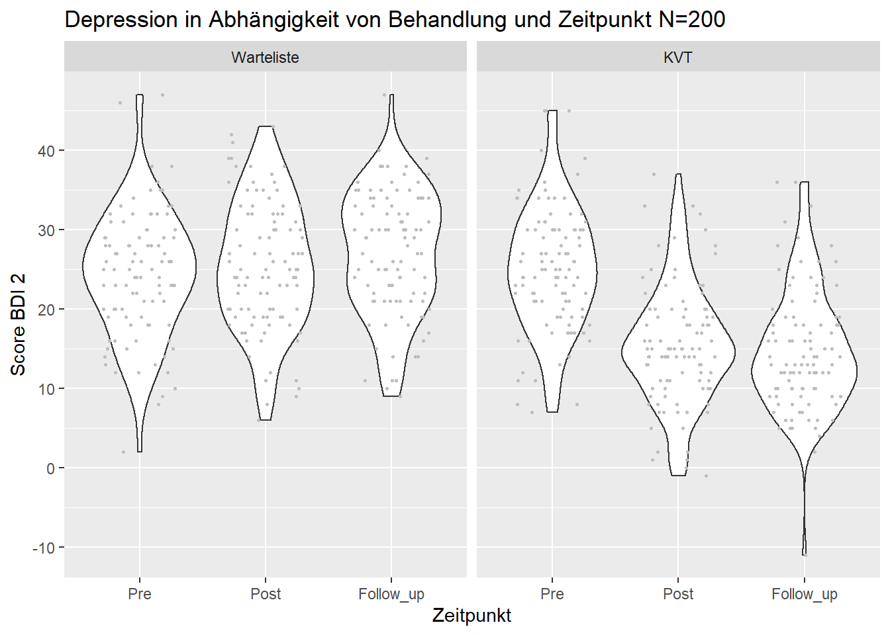
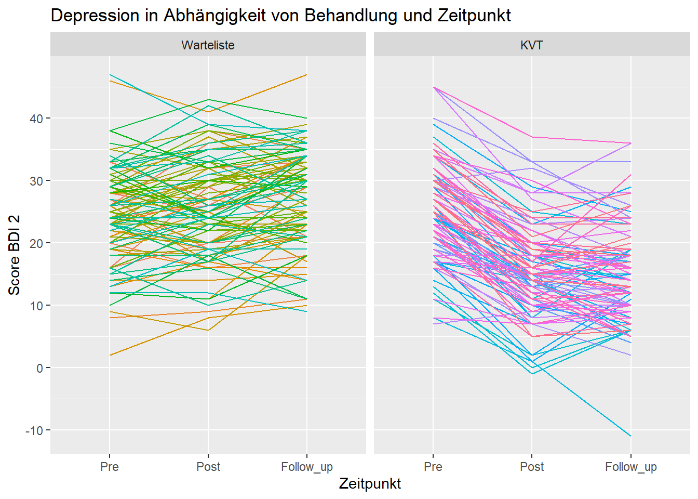
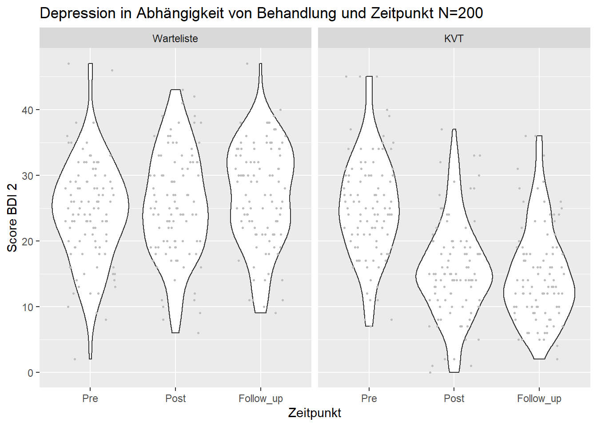
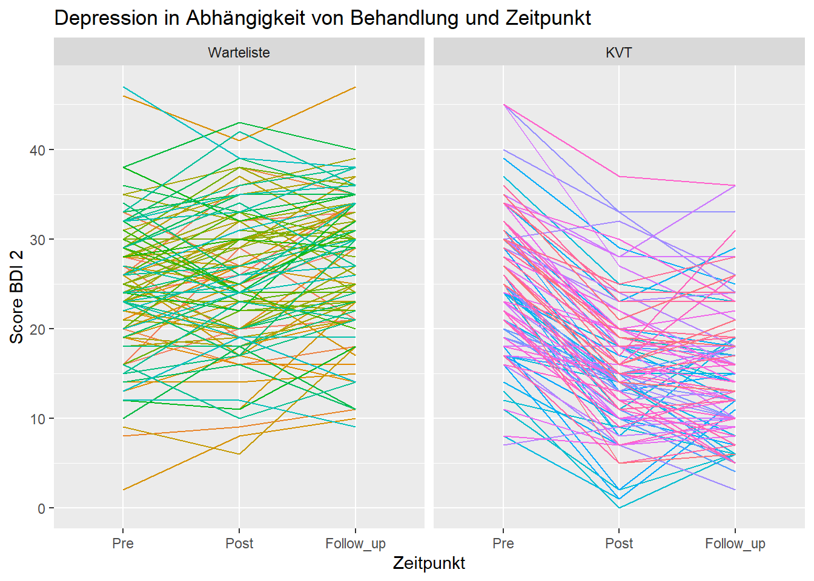
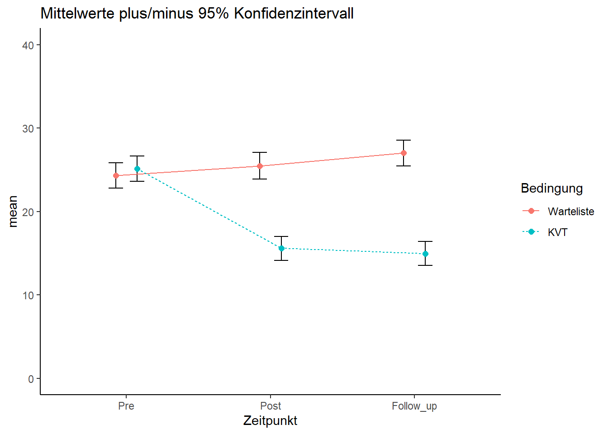
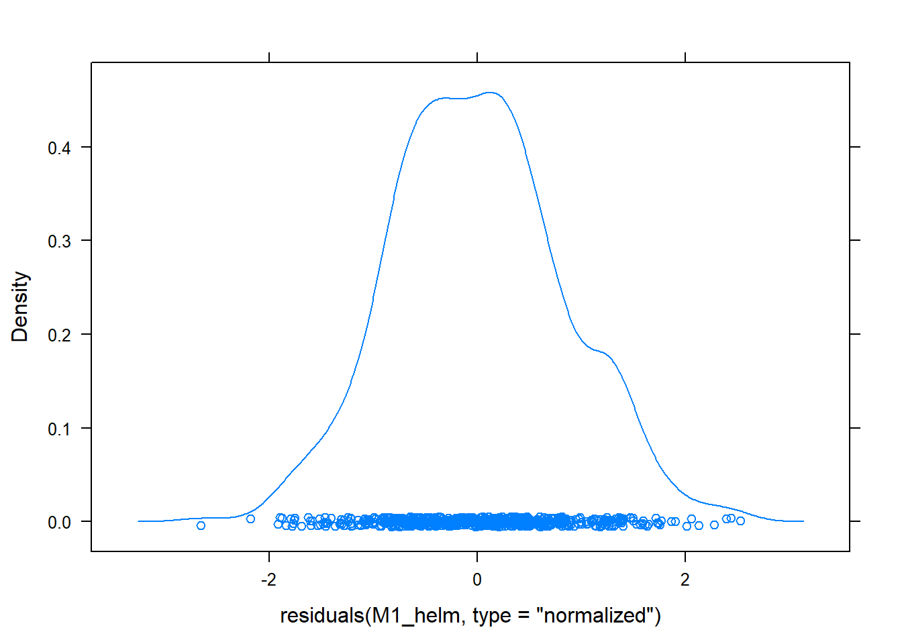
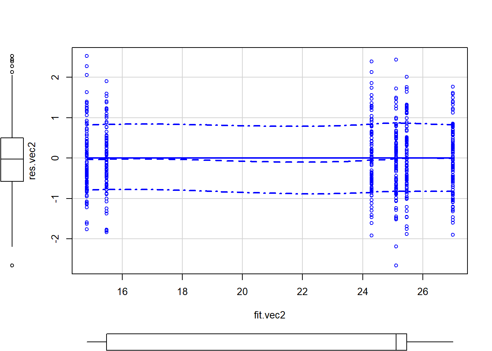
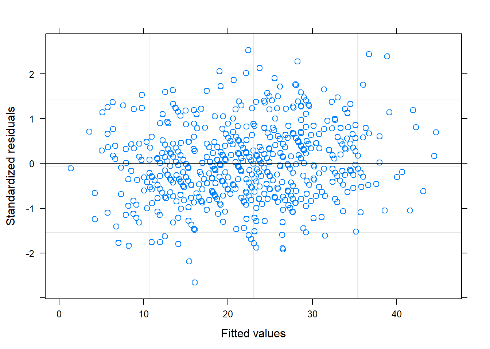

library(ggplot2)
library(psych)
library(Hmisc)
library(car)
library(lmtest)
library(effectsize)
library(rcompanion)
library(tidyr)
library(predictmeans)
library(nlme)
library(ez)Datenanalyse ALM - Modellvergleiche
Allgemeines Lineares Modell - Trendkontraste und Modellvergleiche
In dieser letzten Sitzung zum ALM wollen wir uns noch anschauen, wie sich verschiedene Formen von Trends als Kontraste ausdrücken und analysieren lassen. Außerdem gibt es einfache Möglichkeiten, verschiedene Modelle miteinander zu vergleichen, um herauszufinden, welches die Daten (für die Anzahl an Prädiktoren) am besten beschreibt.
Vorbereitung
#setwd("Sitzungen")
dat_1 <- read.csv(file = "BDI_1_ALM.csv", header = TRUE, sep = ",", dec = ".", na.strings = "NA")
# Characterstrings als Faktoren definieren
dat_1$Gruppe <- as.factor(dat_1$Gruppe)
dat_1$Gruppe <- factor(dat_1$Gruppe, levels = c("Warteliste", "KVT")) Transformation der Daten
dat_1_long <- as.data.frame(pivot_longer(dat_1, cols = c(Pre, Post, Follow_up), names_to = "Zeitpunkt",
values_to = "BDI", values_drop_na = FALSE))
dat_1_long$Zeitpunkt <- as.factor(dat_1_long$Zeitpunkt)
dat_1_long$Zeitpunkt <- factor(dat_1_long$Zeitpunkt, levels = c("Pre", "Post", "Follow_up"))
dat_1_long$ID <- as.factor(dat_1_long$ID)Visuelle Analyse
# BDI als Kriterium/outcome
print(ggplot(dat_1_long, aes(x=Zeitpunkt, y=BDI)) +
geom_violin() +
geom_jitter(width = 0.3, height = 0, col = "grey", size = 0.5) +
facet_wrap(~Gruppe)+
ylab("Score BDI 2") +
xlab("Zeitpunkt") +
ggtitle("Depression in Abhängigkeit von Behandlung und Zeitpunkt N=200"))
print(ggplot(dat_1_long, aes(x=Zeitpunkt, y=BDI, group = ID)) +
facet_wrap(~Gruppe)+
geom_line(aes(color= ID), show.legend = FALSE) +
ylab("Score BDI 2") +
xlab("Zeitpunkt") +
ggtitle("Depression in Abhängigkeit von Behandlung und Zeitpunkt"))
## Wegen nicht möglicher Werte im BDI Daten bereinigen
dat_1_long_b <- subset(dat_1_long, BDI >= 0)
nrow(dat_1_long_b)[1] 598## Abbildungen ohne die nicht möglichen Werte
print(ggplot(dat_1_long_b, aes(x=Zeitpunkt, y=BDI)) +
geom_violin() +
geom_jitter(width = 0.3, height = 0, col = "grey", size = 0.5) +
facet_wrap(~Gruppe)+
ylab("Score BDI 2") +
xlab("Zeitpunkt") +
ggtitle("Depression in Abhängigkeit von Behandlung und Zeitpunkt N=200"))
print(ggplot(dat_1_long_b, aes(x=Zeitpunkt, y=BDI, group = ID)) +
facet_wrap(~Gruppe)+
geom_line(aes(color= ID), show.legend = FALSE) +
ylab("Score BDI 2") +
xlab("Zeitpunkt") +
ggtitle("Depression in Abhängigkeit von Behandlung und Zeitpunkt"))
Deskriptive Analyse
descriptives <- describeBy(BDI ~ Zeitpunkt + Gruppe, mat = TRUE, data = dat_1_long_b)
descriptives item group1 group2 vars n mean sd median trimmed
BDI1 1 Pre Warteliste 1 100 24.30000 7.805075 24.5 24.35000
BDI2 2 Post Warteliste 1 100 25.47000 8.099701 25.0 25.53750
BDI3 3 Follow_up Warteliste 1 100 27.00000 7.772004 27.5 27.33750
BDI4 4 Pre KVT 1 100 25.12000 7.807378 25.0 25.06250
BDI5 5 Post KVT 1 99 15.57576 7.334697 15.0 15.24691
BDI6 6 Follow_up KVT 1 99 14.95960 7.281398 13.0 14.37037
mad min max range skew kurtosis se
BDI1 6.6717 2 47 45 0.01576095 0.40901303 0.7805075
BDI2 8.8956 6 43 37 -0.05173688 -0.51816133 0.8099701
BDI3 9.6369 9 47 38 -0.25011693 -0.47408910 0.7772004
BDI4 7.4130 7 45 38 0.13388079 0.09987586 0.7807378
BDI5 5.9304 0 37 37 0.42907583 0.29601458 0.7371647
BDI6 7.4130 2 36 34 0.77777521 0.24687241 0.7318080#### Namen der Faktoren in Ergebnimatrix einfuegen
names(descriptives)[names(descriptives) == "group1"] <- "Zeitpunkt"
names(descriptives)[names(descriptives) == "group2"] <- "Bedingung"
#### Konfidenzintervall ausrechnen
descriptives$ci_95 <- descriptives$se*1.96
descriptives$Zeitpunkt <- factor(descriptives$Zeitpunkt, levels = c("Pre", "Post", "Follow_up"))
descriptives$Bedingung <- factor(descriptives$Bedingung, levels = c("Warteliste", "KVT"))
#### Graphik machen
pd <- position_dodge(0.3)
# pd zum Versetzen der Punkte der Mittelwert so dass diese sichtbar sind
ggplot(descriptives, aes(x=Zeitpunkt, y=mean, group = Bedingung)) +
ylim(0,40) +
geom_errorbar(width=.2, aes(ymin=mean-ci_95, ymax=mean+ci_95), position = pd) +
geom_point(aes(color = Bedingung), size=2, position = pd) +
geom_line(aes(linetype=Bedingung, color = Bedingung), position = pd) +
ggtitle("Mittelwerte plus/minus 95% Konfidenzintervall")+
theme_classic()
Inferenzstatistik
Behandlung und Zeitpunkt sowie ihre Interaktion sagen den BDI Score vorher.
Eine einfach Messwiederholungsvarianzanalyse
ezANOVA(within=Zeitpunkt, between=Gruppe, wid=ID, dv=BDI, data=dat_1_long)$ANOVA
Effect DFn DFd F p p<.05 ges
2 Gruppe 1 198 48.90910 4.026472e-11 * 0.17703223
3 Zeitpunkt 2 396 94.68304 2.471670e-34 * 0.05816541
4 Gruppe:Zeitpunkt 2 396 210.06633 6.531570e-63 * 0.12050566
$`Mauchly's Test for Sphericity`
Effect W p p<.05
3 Zeitpunkt 0.9950691 0.6145343
4 Gruppe:Zeitpunkt 0.9950691 0.6145343
$`Sphericity Corrections`
Effect GGe p[GG] p[GG]<.05 HFe p[HF]
3 Zeitpunkt 0.9950933 3.529952e-34 * 1.005172 2.47167e-34
4 Gruppe:Zeitpunkt 0.9950933 1.285407e-62 * 1.005172 6.53157e-63
p[HF]<.05
3 *
4 *# leider mag ezANOVA nicht den Datensatz, in dem die unmöglichen Werte gelöscht wurden, daher der komplette DatensatzMulti-level Modell - Trendkontraste
# Mit Trendkontrasten für Faktor Zeitpunkt
###############################################
dat_1_long_b$Zeitpunkt = factor(dat_1_long_b$Zeitpunkt, levels=c("Pre", "Post", "Follow_up"))
contrasts(dat_1_long_b$Zeitpunkt) <- contr.poly(3)
contrasts(dat_1_long_b$Zeitpunkt) .L .Q
Pre -7.071068e-01 0.4082483
Post -7.850462e-17 -0.8164966
Follow_up 7.071068e-01 0.4082483# Modelldefinition
M1 <- lme(BDI ~ Gruppe * Zeitpunkt, random = ~1|ID, data = dat_1_long_b)
summary(M1)Linear mixed-effects model fit by REML
Data: dat_1_long_b
AIC BIC logLik
3688.765 3723.833 -1836.383
Random effects:
Formula: ~1 | ID
(Intercept) Residual
StdDev: 6.922806 3.40129
Fixed effects: BDI ~ Gruppe * Zeitpunkt
Value Std.Error DF t-value p-value
(Intercept) 25.590000 0.7195936 394 35.56174 0.0000
GruppeKVT -7.118634 1.0178427 198 -6.99384 0.0000
Zeitpunkt.L 1.909188 0.3401290 394 5.61313 0.0000
Zeitpunkt.Q 0.146969 0.3401290 394 0.43210 0.6659
GruppeKVT:Zeitpunkt.L -9.194367 0.4818926 394 -19.07970 0.0000
GruppeKVT:Zeitpunkt.Q 3.520493 0.4824819 394 7.29663 0.0000
Correlation:
(Intr) GrpKVT Ztpn.L Ztpn.Q GKVT:Z.L
GruppeKVT -0.707
Zeitpunkt.L 0.000 0.000
Zeitpunkt.Q 0.000 0.000 0.000
GruppeKVT:Zeitpunkt.L 0.000 0.001 -0.706 0.000
GruppeKVT:Zeitpunkt.Q 0.000 0.000 0.000 -0.705 0.002
Standardized Within-Group Residuals:
Min Q1 Med Q3 Max
-2.65942450 -0.58107314 -0.02273876 0.49834186 2.52781027
Number of Observations: 598
Number of Groups: 200 Anova(M1)Analysis of Deviance Table (Type II tests)
Response: BDI
Chisq Df Pr(>Chisq)
Gruppe 48.651 1 3.059e-12 ***
Zeitpunkt 186.066 2 < 2.2e-16 ***
Gruppe:Zeitpunkt 417.867 2 < 2.2e-16 ***
---
Signif. codes: 0 '***' 0.001 '**' 0.01 '*' 0.05 '.' 0.1 ' ' 1# Vorhergesagte Mittelwerte
predmeans <- predictmeans(M1, "Gruppe:Zeitpunkt", adj ="BH", barplot = TRUE)
predmeans$`Predicted Means`
Gruppe Warteliste KVT
Zeitpunkt
Pre 24.3000 25.1200
Post 25.4700 15.4769
Follow_up 27.0000 14.8172
$`Standard Error of Means`
Gruppe Warteliste KVT
Zeitpunkt
Pre 0.77132 0.77132
Post 0.77132 0.77242
Follow_up 0.77132 0.77242
$`Standard Error of Differences`
Max.SED Min.SED Aveg.SED
1.0915907 0.4810150 0.8476738
attr(,"For the Same Level of Factor")
Gruppe Zeitpunkt
Aveg.SED 0.4821856 1.091333
Min.SED 0.4810150 1.090816
Max.SED 0.4845313 1.091591
$LSD
Max.LSD Min.LSD Aveg.LSD
2.14607 0.94568 1.66653
attr(,"For the Same Level of Factor")
Gruppe Zeitpunkt
Aveg.LSD 0.94798 2.14556
Min.LSD 0.94568 2.14455
Max.LSD 0.95259 2.14607
attr(,"Significant level")
[1] 0.05
attr(,"Degree of freedom")
Gruppe:Zeitpunkt
394
$`Pairwise p-value`
Warteliste:Pre Warteliste:Post Warteliste:Follow_up
Warteliste:Pre 0.0000 -2.4324 -5.6131
Warteliste:Post 0.0211 0.0000 -3.1808
Warteliste:Follow_up 0.0000 0.0024 0.0000
KVT:Pre 0.4850 0.7485 0.1070
KVT:Post 0.0000 0.0000 0.0000
KVT:Follow_up 0.0000 0.0000 0.0000
KVT:Pre KVT:Post KVT:Follow_up
Warteliste:Pre -0.7517 8.0828 8.6871
Warteliste:Post 0.3209 9.1546 9.7590
Warteliste:Follow_up 1.7235 10.5563 11.1606
KVT:Pre 0.0000 19.9746 21.3411
KVT:Post 0.0000 0.0000 1.3615
KVT:Follow_up 0.0000 0.2009 0.0000
attr(,"Degree of freedom")
Gruppe:Zeitpunkt
394
attr(,"Note")
[1] "The matrix has t-value above the diagonal, p-value (adjusted by 'BH' method) below the diagonal"
attr(,"Letter-based representation of pairwise comparisons at significant level '0.05'")
Treatment Mean Group
1 Warteliste:Follow_up 27.0000 A
2 Warteliste:Post 25.4700 B
3 KVT:Pre 25.1200 ABC
4 Warteliste:Pre 24.3000 C
5 KVT:Post 15.4769 D
6 KVT:Follow_up 14.8172 D
$mean_table
Gruppe Zeitpunkt Predicted means Standard error Df LL of 95% CI
1 Warteliste Pre 24.3000 0.7713236 394 22.78358
2 Warteliste Post 25.4700 0.7713236 394 23.95358
3 Warteliste Follow_up 27.0000 0.7713236 394 25.48358
4 KVT Pre 25.1200 0.7713236 394 23.60358
5 KVT Post 15.4769 0.7724183 394 13.95832
6 KVT Follow_up 14.8172 0.7724183 394 13.29863
UL of 95% CI LetterGrp
1 25.81642 A
2 26.98642 B
3 28.51642 C
4 26.63642 ABC
5 16.99547 D
6 16.33578 Dpredmeans$predictmeansBarPlot
# Residuen
densityplot(residuals(M1, type = "normalized"))
## Normalisierung ist wichtig, damit Abhängigkeiten richtig berücksichtigt werden
# Abspeichern der Residuen und fitted values in Vektoren
res.vec <- residuals(M1, type = "normalized")
fit.vec <- M1$fitted[,1]
# Scatterplot machen für Verteilung in den 6 Bedingungen
scatterplot(res.vec ~ fit.vec)
# Scatterplot für Residuen unter Berücksichtigung des random intercept
plot(M1)Wenn euch die Interpretation dieser Ausgabe schwerfällt, ist das eher ein gutes als ein schlechtes Zeichen. Wir werden uns weiter unten eine Subgruppenanalyse zum besseren Verständnis anschauen. Dennoch möchte ich die Ergebnisse hier kurz interpretieren:
- Im Mittel über alle Zeitpunkte hinweg reduziert sich die Symptomatik um ca. 7.12 Punkte, wenn man in der KVT-Bedingung statt der Warteliste ist (
GruppeKVT). - In der Wartelistenbedingung erhöht sich die Symptomatik mit jedem Zeitpunkt um durchschnittlich ca. 1.91 Punkte (
Zeitpunkt.L). - In der KVT-Gruppe kehrt sich der lineare Trend um (die Symptomatik wird geringer) (
Zeitpunkt.L + GruppeKVT:Zeitpunkt.L). - Die Abnahme in der KVT-Gruppe flacht mit der Zeit ab (
Zeitpunkt.Q + GruppeKVT:Zeitpunkt.Q).
Multi-level Modell - Helmertkontraste
# Mit Helmertkontrasten für Faktor Zeitpunkt
###############################################
dat_1_long_b$Zeitpunkt = factor(dat_1_long_b$Zeitpunkt, levels=c("Follow_up", "Post", "Pre"))
contrasts(dat_1_long_b$Zeitpunkt) <- contr.helmert(3)
contrasts(dat_1_long_b$Zeitpunkt) [,1] [,2]
Follow_up -1 -1
Post 1 -1
Pre 0 2# Modelldefinition
M1_helm <- lme(BDI ~ Gruppe * Zeitpunkt, random = ~1|ID, data = dat_1_long_b)
summary(M1_helm)Linear mixed-effects model fit by REML
Data: dat_1_long_b
AIC BIC logLik
3693.735 3728.803 -1838.868
Random effects:
Formula: ~1 | ID
(Intercept) Residual
StdDev: 6.922806 3.40129
Fixed effects: BDI ~ Gruppe * Zeitpunkt
Value Std.Error DF t-value p-value
(Intercept) 25.590000 0.7195936 394 35.56174 0.0000
GruppeKVT -7.118634 1.0178427 198 -6.99384 0.0000
Zeitpunkt1 -0.765000 0.2405075 394 -3.18077 0.0016
Zeitpunkt2 -0.645000 0.1388571 394 -4.64506 0.0000
GruppeKVT:Zeitpunkt1 1.094847 0.3413744 394 3.20717 0.0014
GruppeKVT:Zeitpunkt2 3.969317 0.1966114 394 20.18864 0.0000
Correlation:
(Intr) GrpKVT Ztpnk1 Ztpnk2 GKVT:Z1
GruppeKVT -0.707
Zeitpunkt1 0.000 0.000
Zeitpunkt2 0.000 0.000 0.000
GruppeKVT:Zeitpunkt1 0.000 0.000 -0.705 0.000
GruppeKVT:Zeitpunkt2 0.000 -0.001 0.000 -0.706 0.000
Standardized Within-Group Residuals:
Min Q1 Med Q3 Max
-2.65942450 -0.58107314 -0.02273876 0.49834186 2.52781027
Number of Observations: 598
Number of Groups: 200 Anova(M1_helm)Analysis of Deviance Table (Type II tests)
Response: BDI
Chisq Df Pr(>Chisq)
Gruppe 48.651 1 3.059e-12 ***
Zeitpunkt 186.066 2 < 2.2e-16 ***
Gruppe:Zeitpunkt 417.867 2 < 2.2e-16 ***
---
Signif. codes: 0 '***' 0.001 '**' 0.01 '*' 0.05 '.' 0.1 ' ' 1# Residuen
densityplot(residuals(M1_helm, type = "normalized"))
## Normalisierung ist wichtig, damit Abhängigkeiten richtig berücksichtigt werden
# Abspeichern der Residuen und fitted values in Vektoren
res.vec2 <- residuals(M1_helm, type = "normalized")
fit.vec2 <- M1_helm$fitted[,1]
# Scatterplot machen für Verteilung in den 6 Bedingungen
scatterplot(res.vec2 ~ fit.vec2)
# Scatterplot für Residuen unter Berücksichtigung des random intercept
plot(M1_helm)
An der Interpretation des Modells mit Helmertkontrasten könnt ihr euch nun einmal selbst versuchen. Bei Fragen wie immer gerne melden.
Subgruppenanalyse zur genaueren Überprüfung der Trends
dat_Warteliste <- subset(dat_1_long_b, Gruppe == "Warteliste")
dat_KVT <- subset(dat_1_long_b, Gruppe == "KVT")
## Warteliste
dat_Warteliste$Zeitpunkt <- factor(dat_Warteliste$Zeitpunkt, levels = c("Pre", "Post", "Follow_up"))
contrasts(dat_Warteliste$Zeitpunkt) <- contr.poly(3)
M2 <- lme(BDI ~ Zeitpunkt, random = ~1|ID, data = dat_Warteliste)
summary(M2)Linear mixed-effects model fit by REML
Data: dat_Warteliste
AIC BIC logLik
1857.935 1876.404 -923.9676
Random effects:
Formula: ~1 | ID
(Intercept) Residual
StdDev: 7.120393 3.407266
Fixed effects: BDI ~ Zeitpunkt
Value Std.Error DF t-value p-value
(Intercept) 25.590000 0.7387139 198 34.64129 0.0000
Zeitpunkt.L 1.909188 0.3407266 198 5.60329 0.0000
Zeitpunkt.Q 0.146969 0.3407266 198 0.43134 0.6667
Correlation:
(Intr) Ztpn.L
Zeitpunkt.L 0
Zeitpunkt.Q 0 0
Standardized Within-Group Residuals:
Min Q1 Med Q3 Max
-1.91916183 -0.60908507 -0.04553866 0.51152891 2.36937936
Number of Observations: 300
Number of Groups: 100 ## KVT
contrasts(dat_KVT$Zeitpunkt) <- contr.helmert(3)
contrasts(dat_KVT$Zeitpunkt) [,1] [,2]
Follow_up -1 -1
Post 1 -1
Pre 0 2M3 <- lme(BDI ~ Zeitpunkt, random = ~1|ID, data = dat_KVT)
summary(M3)Linear mixed-effects model fit by REML
Data: dat_KVT
AIC BIC logLik
1837.024 1855.459 -913.5121
Random effects:
Formula: ~1 | ID
(Intercept) Residual
StdDev: 6.718375 3.395441
Fixed effects: BDI ~ Zeitpunkt
Value Std.Error DF t-value p-value
(Intercept) 18.471864 0.7001197 196 26.383866 0.0000
Zeitpunkt1 0.329711 0.2418456 196 1.363311 0.1743
Zeitpunkt2 3.324068 0.1389532 196 23.922209 0.0000
Correlation:
(Intr) Ztpnk1
Zeitpunkt1 0.000
Zeitpunkt2 -0.002 0.000
Standardized Within-Group Residuals:
Min Q1 Med Q3 Max
-2.675391087 -0.563557701 -0.008639186 0.484410585 2.541669342
Number of Observations: 298
Number of Groups: 100 Hier wie versprochen die Subgruppenanalyse. Bezüglich der Wartelistengruppe bestätigen sich die Aussagen von oben.
Wenn man die KVT-Gruppe mit Helmertkontrasten analysiert, findet sich eine signifikante Abnahme von Prä zu Post, aber keine signifikante Abnahme von Post zu Follow-up, was mit einem generell fallenden, aber eben abflachenden Trend zusammenpasst.
Hier lässt sich erkennen, dass es einen großen Unterschied für die Interpretation macht, welche Trends man benutzt. Die Helmertkontraste legen den Fokus auf einzelne (, nicht vorhandene) Unterschiede, während Trendkontraste auf Zusammenhänge aus sind, die mit dem Vergleichen von zwei Ausprägungen nicht mehr viel zu tun haben.
Modellvergleiche
Die Modellvergleiche dienen dazu, herauszufinden, ob das Modell so in Ordnung ist, oder das Modell vereinfacht oder komplexer gemacht werden sollte.
Wir schauen uns hier verschiedene Fragen an, die wir mit Modellvergleichen beantworten können. Zunächst die Frage aus der letzten Sitzung, inwiefern random intercepts notwendig sind.
M1_no_random_intercept <- gls(BDI ~ Gruppe * Zeitpunkt, data = dat_1_long_b)
lrtest(M1_no_random_intercept, M1)Warning in modelUpdate(objects[[i - 1]], objects[[i]]): original model was of
class "gls", updated model is of class "lme"Likelihood ratio test
Model 1: BDI ~ Gruppe * Zeitpunkt
Model 2: BDI ~ Gruppe * Zeitpunkt
#Df LogLik Df Chisq Pr(>Chisq)
1 7 -2065.0
2 8 -1836.4 1 457.3 < 2.2e-16 ***
---
Signif. codes: 0 '***' 0.001 '**' 0.01 '*' 0.05 '.' 0.1 ' ' 1AIC(M1)[1] 3688.765AIC(M1_no_random_intercept)[1] 4144.066Ja, das Modell mit random intercept ist besser. Aber können wir vielleicht Prädiktoren entfernen?
Anova(M1)Analysis of Deviance Table (Type II tests)
Response: BDI
Chisq Df Pr(>Chisq)
Gruppe 48.651 1 3.059e-12 ***
Zeitpunkt 186.066 2 < 2.2e-16 ***
Gruppe:Zeitpunkt 417.867 2 < 2.2e-16 ***
---
Signif. codes: 0 '***' 0.001 '**' 0.01 '*' 0.05 '.' 0.1 ' ' 1Nein, das Modell würde signifikant schlechter werden.
Wir können bei einem Multilevelmodell nicht nur den Intercept variieren lassen, sondern auch die Steigung für einzelne Prädiktoren. Vielleicht wirkt die Therapie ja nicht bei allen Menschen gleich schnell. Wäre das hier sinnvoll?
M1_random_slope_Zeitpunkt <- lme(BDI ~ Gruppe * Zeitpunkt, random = ~Zeitpunkt|ID, data = dat_1_long_b)
lrtest(M1, M1_random_slope_Zeitpunkt)Likelihood ratio test
Model 1: BDI ~ Gruppe * Zeitpunkt
Model 2: BDI ~ Gruppe * Zeitpunkt
#Df LogLik Df Chisq Pr(>Chisq)
1 8 -1836.4
2 13 -1838.0 5 3.3442 0.6471AIC(M1)[1] 3688.765AIC(M1_random_slope_Zeitpunkt)[1] 3702.109Nein, es wäre hier nicht sinnvoll. Vielleicht wirkt aber KVT an sich nicht bei allen Menschen gleich gut.
M1_random_slope_Bedingung <- lme(BDI ~ Gruppe * Zeitpunkt, random = ~Gruppe|ID, data = dat_1_long_b)
lrtest(M1, M1_random_slope_Bedingung)Likelihood ratio test
Model 1: BDI ~ Gruppe * Zeitpunkt
Model 2: BDI ~ Gruppe * Zeitpunkt
#Df LogLik Df Chisq Pr(>Chisq)
1 8 -1836.4
2 10 -1838.7 2 4.6816 0.09625 .
---
Signif. codes: 0 '***' 0.001 '**' 0.01 '*' 0.05 '.' 0.1 ' ' 1AIC(M1)[1] 3688.765AIC(M1_random_slope_Bedingung)[1] 3697.447## NeinAuch das ist hier keine sinnvolle Annahme.
Besonders hilfreich werden Modellvergleiche bei Growth models. Als kleinen Vorgriff auf das, was kommt: Gibt es vielleicht Abhängigkeiten in der Autokorrelation des Kriteriums, die modelliert werden müssen?
M1_dependencies <- lme(BDI ~ Gruppe * Zeitpunkt, random = ~1|ID, correlation = corARMA(c(0.1,0.1), form = ~1|ID, p=1, q=1), data = dat_1_long_b)
lrtest(M1, M1_dependencies)Likelihood ratio test
Model 1: BDI ~ Gruppe * Zeitpunkt
Model 2: BDI ~ Gruppe * Zeitpunkt
#Df LogLik Df Chisq Pr(>Chisq)
1 8 -1836.4
2 10 -1838.3 2 3.8033 0.1493summary(M1_dependencies)Linear mixed-effects model fit by REML
Data: dat_1_long_b
AIC BIC logLik
3696.568 3740.404 -1838.284
Random effects:
Formula: ~1 | ID
(Intercept) Residual
StdDev: 6.850174 3.540281
Correlation Structure: ARMA(1,1)
Formula: ~1 | ID
Parameter estimate(s):
Phi1 Theta1
0.05883387 0.05322722
Fixed effects: BDI ~ Gruppe * Zeitpunkt
Value Std.Error DF t-value p-value
(Intercept) 25.590000 0.7193160 394 35.57546 0.0000
GruppeKVT -7.116955 1.0174766 198 -6.99471 0.0000
Zeitpunkt1 -0.765000 0.2359805 394 -3.24179 0.0013
Zeitpunkt2 -0.645000 0.1415004 394 -4.55829 0.0000
GruppeKVT:Zeitpunkt1 1.091222 0.3349443 394 3.25792 0.0012
GruppeKVT:Zeitpunkt2 3.967879 0.2002944 394 19.81023 0.0000
Correlation:
(Intr) GrpKVT Ztpnk1 Ztpnk2 GKVT:Z1
GruppeKVT -0.707
Zeitpunkt1 0.013 -0.009
Zeitpunkt2 -0.007 0.005 0.066
GruppeKVT:Zeitpunkt1 -0.009 0.013 -0.705 -0.046
GruppeKVT:Zeitpunkt2 0.005 -0.008 -0.046 -0.706 0.065
Standardized Within-Group Residuals:
Min Q1 Med Q3 Max
-2.57030107 -0.56069566 -0.03174915 0.48617371 2.39974270
Number of Observations: 598
Number of Groups: 200 AIC(M1)[1] 3688.765AIC(M1_dependencies)[1] 3696.568Bei diesen Daten scheinen solche Abhängigkeiten nicht vorzuliegen.